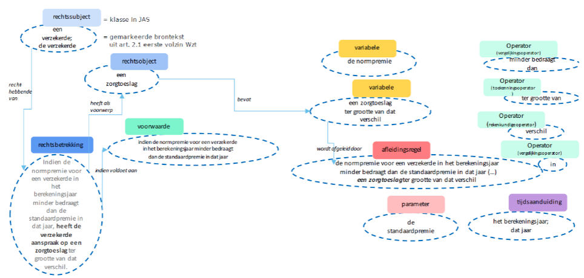

Voorbeelden; Wetsanalyse
Artikel 2, eerste lid, Wet op de zorgtoeslag
In de tekst van artikel 2, eerste lid, zijn de verschillende formuleringen geclassificeerd aan de hand van het juridisch analyseschema van Wetsanalyse. Het lid is steeds opnieuw opgenomen, om te kunnen laten zien dat formuleringen tot meer klasses kunnen behoren.
1. Indien de normpremie voor een verzekerde in het berekeningsjaar minder bedraagt dan de standaardpremie in dat jaar, heeft de verzekerde aanspraak op een zorgtoeslag ter grootte van dat verschil. (rechtsbetrekking)
1. Indien de normpremie voor een verzekerde in het berekeningsjaar minder bedraagt dan de standaardpremie in dat jaar (voorwaarde), heeft de verzekerde aanspraak op een zorgtoeslag (rechtsobject) ter grootte van dat verschil.
1. Indien de normpremie (variabele) voor een verzekerde (rechtssubject) in het berekeningsjaar (tijdsaanduiding) bedraagt dan de standaardpremie (parameter) in dat jaar (tijdsaanduiding), heeft de verzekerde (rechtssubject) aanspraak op een zorgtoeslag ter grootte van dat verschil (variabele).
1. Indien de normpremie voor een verzekerde in het berekeningsjaar minder bedraagt dan de standaardpremie in dat jaar, heeft de verzekerde aanspraak op een zorgtoeslag ter grootte van dat verschil (afleidingsregel).
1. Indien de normpremie voor een verzekerde in het berekeningsjaar minder bedraagt dan de standaardpremie in dat jaar, heeft de verzekerde aanspraak op een zorgtoeslag ter grootte van dat verschil. (operatoren)
In onderstaande figuur zijn de geannoteerde formuleringen en de bijbehorende klassen in een schema gezet waarin ook de relaties hiertussen tot uitdrukking komen.
(Komt bovenstaande figuur u niet bekend voor&) Kijk dan bij Analyseschema > Wetsanalyse
Hiermee is de analyse niet ‘klaar’. Ook de gebruikte begrippen en variabelen moeten nog uiteengerafeld worden. Het begrip ‘verzekerde’ is bijvoorbeeld gedefinieerd in artikel 1, Wet Zorgtoeslag, maar verwijst weer naar verschillende bepalingen uit de Zorgverzekeringswet waaraan getoetst moet worden om te bepalen of iemand daadwerkelijk verzekerde voor de zorgtoeslag is. En ook aan de normpremie liggen weer bepalingen met afleidingsregels ten grondslag.
Als al deze componenten in kaart gebracht zijn, kunnen de in de uitvoering toe te passen beslis- en rekenregels en de daarbij te gebruiken gegevens worden gemodelleerd.